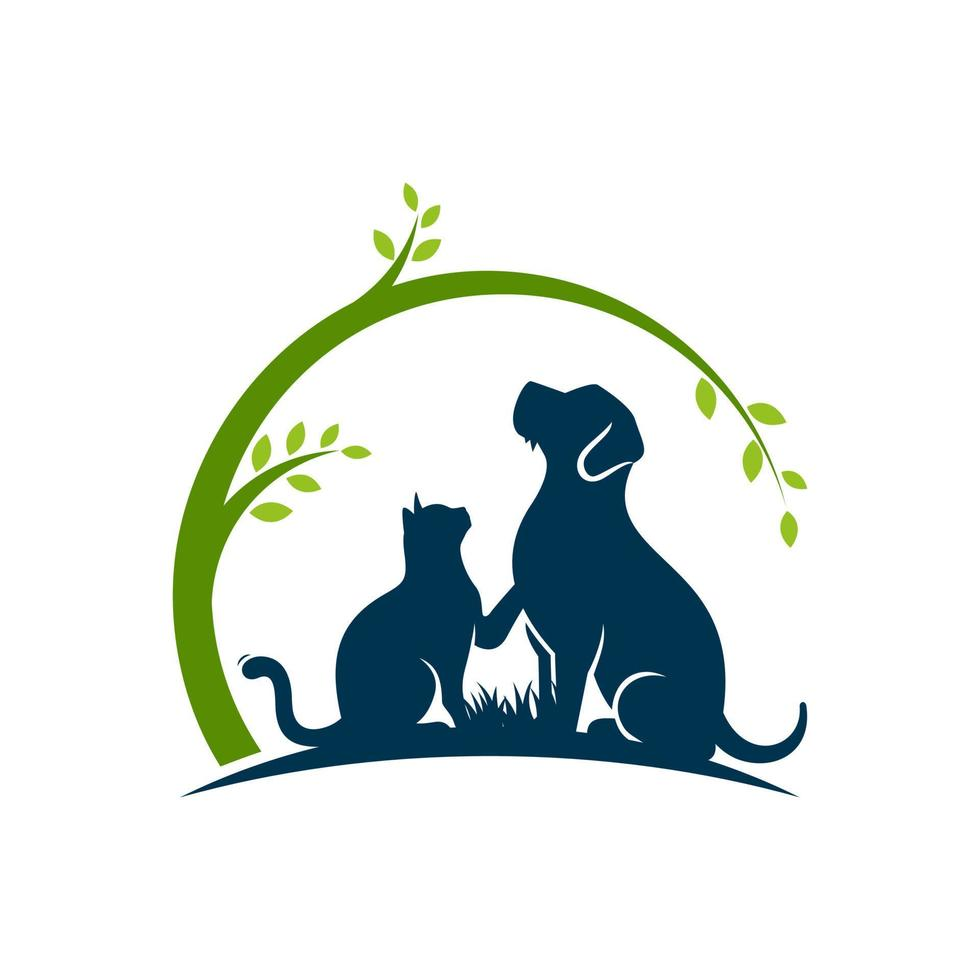
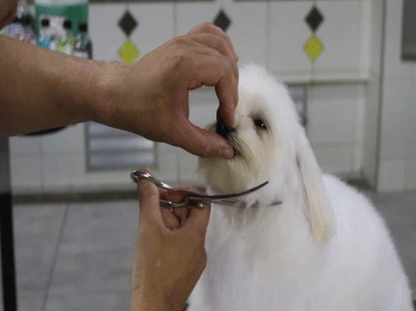
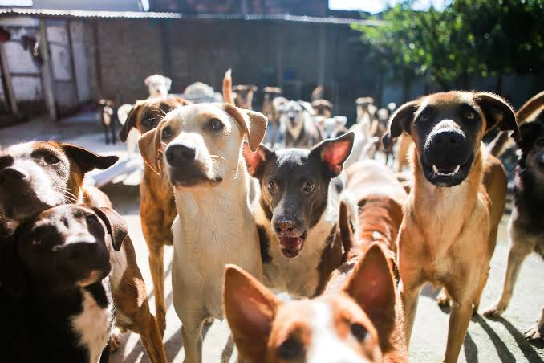

PARNAÍBA ANIMAIS DE RUA
Adote este pobre gatinho que espera por uma família e por um cantinho para chamar de lar. Por trás de cada miado existe um pequeno coração cheio de carinho, esperança e vontade de amar. Leve-me para casa, ofereça-me segurança, conforto e cuidado, e eu retribuirei com ronronados, companheirismo e muito amor. 🐱❤️
Conheça nosso canal de cursos e consultas online.

nossa campanha contra maus tratos contra animais.
conheça nossa estrutura para animais abandonados.
